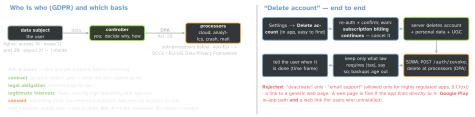

security · folio
In one line: The law (GDPR) says: every purpose needs a lawful basis, collect the minimum, honour rights (access, erasure, portability) and bind every processor by contract. The stores enforce the visible parts: in-app account deletion (Apple 5.1.1(v), Google Play), Sign in with Apple token revocation, honest privacy labels / Data safety, ATT before tracking, stricter rules for children. Your SDKs’ data is your data.
Download PDF Print view LaTeX source


GDPR in one column
- Art. 5 principles: lawful/fair/transparent · purpose limitation · data minimisation · accuracy · storage limitation · integrity & confidentiality · accountability (prove it).
- Consent (Art. 4(11), 7): freely given, specific, informed, unambiguous, an affirmative act; withdrawing must be as easy as giving; no pre-ticked boxes, no bundling. Record who, when, what text.
- ePrivacy Art. 5(3): reading/writing on the device (SDK identifiers too) needs consent unless strictly necessary — that, not only GDPR, is why analytics/ads SDKs wait for opt-in in the EU.
- Personal data includes device IDs, IPs, hashed e-mails (pseudonymised ≠ anonymous)(unverified).
- Breach: tell the authority within 72 h (Art. 33). DPIA (Art. 35) before high-risk processing (large-scale location, health). Privacy by design/default (Art. 25). Fines up to €20 M or 4% of worldwide turnover.
Example — revoke Sign in with Apple on deletion
POST https://appleid.apple.com/auth/revoke
Content-Type: application/x-www-form-urlencoded
client_id=com.example.app
&client_secret=<JWT: ES256, your .p8 key; iss=Team ID,
sub=client_id, aud=https://appleid.apple.com>
&token=<refresh_token stored at sign-in>
&token_type_hint=refresh_token
# 200 = revoked (also if already invalid), empty body.
# client_secret: ES256, exp at most 6 months. Also handle
# the server-to-server events consent-revoked, account-deletedApple guideline 5.1 — the lines to quote
- 5.1.1(i) privacy policy linked in App Store Connect and in the app; says what, how, retention, how to delete.
- (ii) consent even for “anonymous” data; paid features can’t depend on it; easy withdrawal.
- (iii) minimisation: prefer the out-of-process picker or share sheet over full access.
- (v) “If your app supports account creation, you must also offer account deletion within the app” (since 30 Jun 2022).
- 5.1.2(i) tracking only with ATT permission; never gate features on it.
ATT is not consent
ATT (iOS 14.5+) is Apple’s gate for tracking (linking with other companies’ data) and the IDFA. GDPR/ePrivacy consent is a separate legal duty with its own UI and records — one does not satisfy the other; a user can allow ATT and still refuse analytics.
Labels: Apple vs Google
| App Privacy (Apple) | Data safety (Play) | |
|---|---|---|
| groups | used to track you · linked to you · not linked | collected · shared (to third parties) |
| extra | per data type: purposes | encryption in transit, deletion requests, independent review |
| source | your answers + SDKs’; Xcode privacy report aggregates manifests | your answers + SDKs’ |
Wrong labels are a review/enforcement issue and a regulator’s evidence. Manifests, required-reason APIs, purpose strings, ATT mechanics: see app-hardening-privacy.
Children
- COPPA (US, under 13): verifiable parental consent. 2025 amendments — effective 23 Jun 2025, comply by 22 Apr 2026: separate consent to disclose to third parties (ads), written retention policy, no indefinite retention, security programme.
- GDPR Art. 8: consent age 16 by default; countries may lower it to 13.
- Apple Kids category (1.3, 5.1.4): no third-party analytics/ads (narrow exceptions), parental gate. Declared Age Range (iOS 26): the user shares an age range, not a birthday — for age-assurance laws (US states); Play Age Signals on Android(unverified).
Traps
- “The analytics SDK collects it, not us” — you are the controller; it is on your label and your DPA.
- Deletion that leaves the SIWA link, CRM row, analytics profile and logs behind.
- Legitimate interest for ad tracking or a consent screen with only “Accept”.
- “We hash e-mails, so it’s anonymous” — still personal data.
- Collect “in case we need it later” — breaks purpose limitation and minimisation.